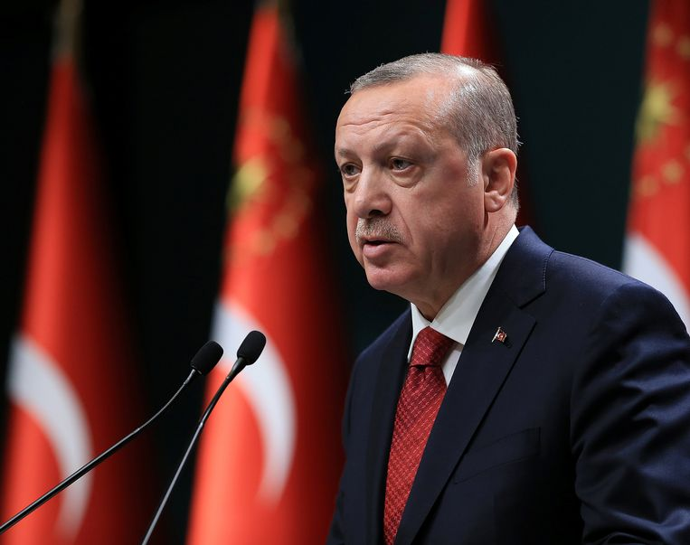
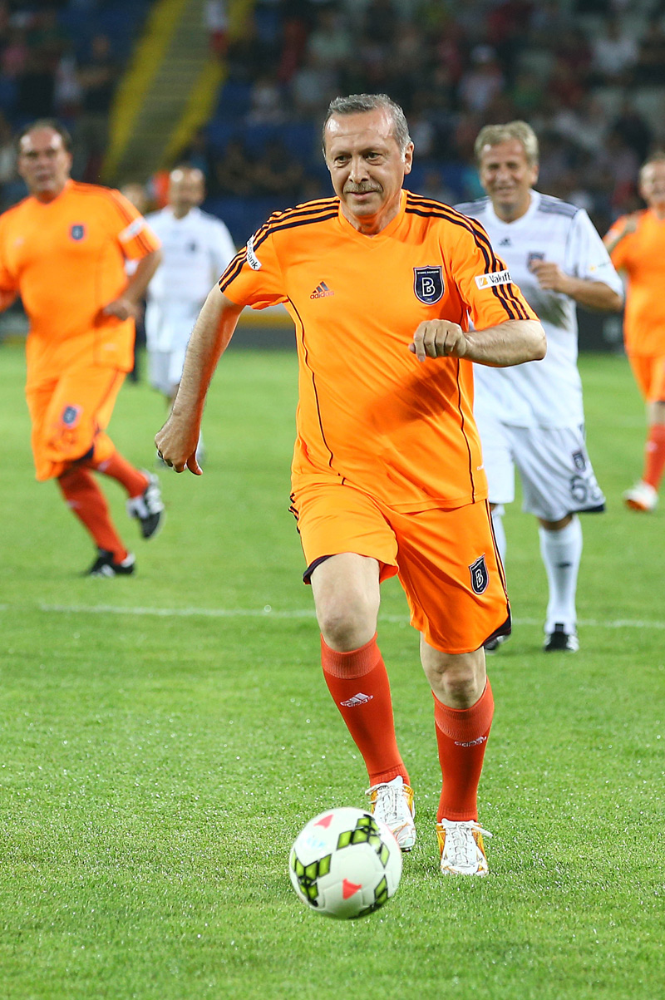

Erdoğan komt uit een vroom islamitisch gezin met een laag middeninkomen. Hij werd geboren in Kasımpaşa, een van de oudere wijken van Istanbul. Het gezin was in de jaren vijftig vanuit de noordoostelijke provincie Rize naar Istanbul verhuisd. Het gezin keerde spoedig terug naar Rize, waar hij zijn kinderjaren doorbracht; zijn vader werkte er als kustwacht. Zijn familie is afkomstig uit Güneysu
(in het lokale Grieks Potamia genoemd), waar hij zijn zomervakanties doorbracht. In toespraken gebruikt Erdoğan deze oude naam voor het dorp, hoewel hij ook heeft beweerd deels van Georgische afkomst te zijn. Toen hij dertien jaar was, verhuisde het gezin opnieuw naar Istanbul. Hij doorliep de Kasımpaşa Piyale-basisschool in 1965 en de İmam Hatip-school, een religieuze beroepsopleiding, in 1973. Hij behaalde zijn middelbareschooldiploma op de middelbare school van Eyüp. Om geld te verdienen verkocht hij als tiener limonade en simit in de wijken van deze West-Turkse stad

Burgemeester -en presidentschap
Bij de lokale verkiezingen van 27 maart 1994 werd Erdogan verkozen tot burgemeester van Istanbul, een van de grootste stedelijke gebieden van de wereld.
Gedurende zijn Burgemeesterschap partij hij chronische problemen aan als het watertekort, de vervuiling en de verkeerchaos.
Het watertekort was opgelost met de aanleg van honderden kilometers van nieuwe pijpleidingen. Het probleem omtrent het vuilnis werd opgelost met de richting van state of art.
Recyclingfaciliteiten. Luchtvervuiling werd verminderd dmet een project dat is ontwikkeld was om over te schakelen op aardgas.
Erdoğan is de 12de president van Turkije. Na zijn verkiezingen tot president in 2014 moest Erdoğan tot leiderschap van de AK-partij neerleggen, omdat de president voolgens de grondwet geen lid kon zijn
van een politieke partij. Dit verbod werd daarom in 2017 geschrapt, waarna Erdoğan opniew werd gekozen tot partijleider.
Voetbal

Om geld te verdienen verkocht hij als tiener limonade en simit in Kasımpaşa. Hij ging er ook voetballen bij een lokale club. Het station van de de lokale voetbalclub Kasımpaşa SK is naar hem vernoemd.
Ik ga niet liegen hij heeft skils ouwe Hieronder is er een video waardat hij voetbalt.
Solliciteren voor het Turks Leger
Als je wilt kan je via de onderstaande link solliciteren voor het Turks leger en mij vechten.
Ja mag dan legaal kanker kurden vermoorden. Eerlijk wie wilt dat nu niet.